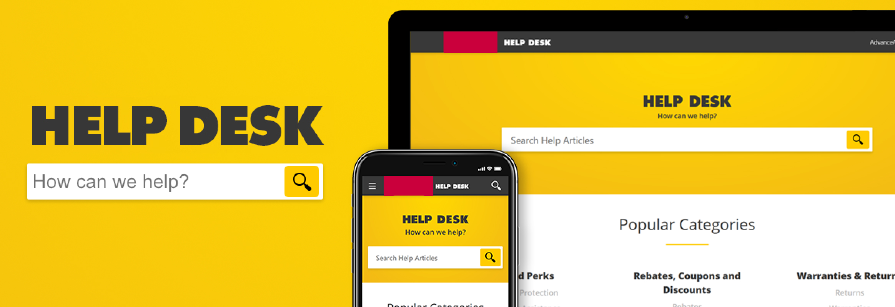

Advance is a U.S. based aftermarket automotive parts provider. It operates over 4,000 stores nation wide and serves millions of customers each month through its website.
Due to the high volume of traffic, vast number of products, and all the services available— customer support is an area that requires a great deal of consideration.
Research, Wireframes
Prototype, UI Design
Customer Service Manager
Font End-Developer
Customers are diverse and their needs and expectations are only increasing. Zendesk was chosen as the platform to build on.
The quicker customers can get their problems resolved the sooner they can get back to fixing their vehicle.
Telephone based Customer Service is expensive to maintain and frustrating for customers.
I looked at direct competitors and some of Zendesk’s existing clients and found some useful patterns:

I mapped out the site and organized the existing FAQ and help articles into logical categories. I determined we would need a handful of page templates. I framed out a Homepage, Search Results, Categories, Menu, Article, and Submit Form.
After putting together a working mobile prototype, I shopped it around the office and with some focus groups. I made slight changes to touch target sizes, the aragement of information, and got approval from the business to move forward with UI and branding.
Because the website was primarly text we had to follow the established typographic standards of the Advance brand. Uppercase Futura was used for headlines and Open sans was used for body copy.
There were a few other stipulations that had to be met:

Overall The help desk platform was rolled out and acheived its goal of modernizing the customer service experience. Customers responded favorably to the site, and continue to use it.
The Good:
Customers seemed to be able to find what they were looking for and it did reduce the number of incoming support calls for general website help.
The Bad:
Originally the “still can’t find help?” section was hidden and difficult for users to find. We later tested a few different appraoches and made the necessary changes.
The Ugly:
When the page launched there was an automated chat feature that hovered in the bottom right corner. It turned out to be universally loathed by users. The feature has since been removed.